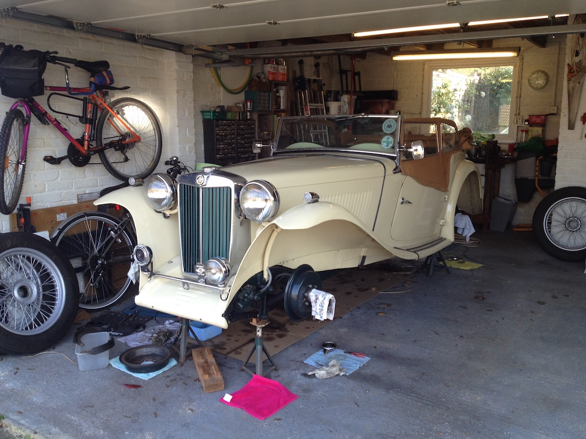
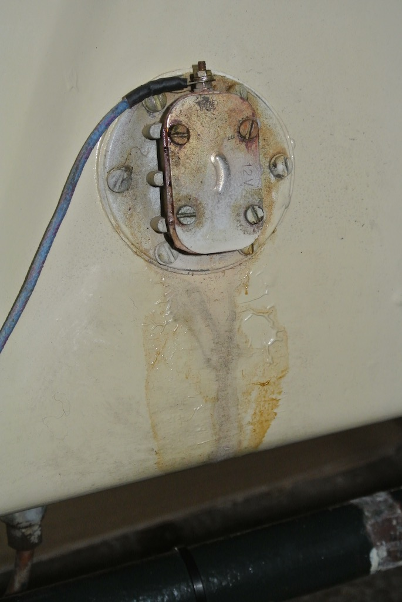

The List Only Gets Longer
Three things will be familiar to owners of classic cars; the list of jobs to do on the car never seems to get any shorter, each job takes longer and is more difficult than you first thought and problems appear even if you don’t drive the car.
Let me give you an example of the second of these ‘laws of classic motoring’; jobs take longer and are more difficult than you think. Last Autumn I did a routine service of the TC; the usual change of oil and filter, greasing all the appropriate points, checking that nothing was falling off. I also decided that, rather than simply adjusting the brakes, it was time to replace the brake fluid. I have a device to help bleed the brakes; simply a clear neoprene tube with a rubber tube on one end that fits over the bleed nipple on the slave cylinders and with a one-way valve on the other end. The difficulty with T-series cars, however, is that the brake master cylinder is located under the floor in the driver’s footwell, since the pedals come up through the floor. Of course, the fluid needs to be topped up as you bleed the brakes and expel fluid from a slave cylinder. To reach the master cylinder you need to remove the carpet in the footwell, loosen a screw that holds one side of a cover plate in place, swing the cover plate to one side (which means that I have to loosen the rubber gaiter that fits around the pedals), peer through the hole in the floor and remove the cap on the master cylinder. Then I remove the filter and put a small funnel in the top, since my chances of pouring brake fluid accurately into the top of the cylinder when I have my head under the steering wheel are slight.
When working on the wheels I find it more convenient to have the car on axle stands. In fact it seems to spend as much time on stands as it does on the road, but any job that requires access to the underside is easier if the car is a few inches higher than normal. I use a length of 4”x3” wood, with wooden strips attached, that fits under the front beam axle and goes on top of the trolley jack. To lift the rear I have another wooden block that is shaped to fit under the differential. Getting the car up and down is always a somewhat nervous operation.
In the Autumn when I came to start this job I discovered that I couldn’t undo the bleed nipples. They had corroded over the years and the correct size spanner simply slipped. So I bought new bleed nipples, but in order to remove the old ones I had to remove the slave cylinder from the backplate. Difficulty number one, or is it two. Banjo fittings are used in a number of places and the attachment of the flexible brake pipe to each rear cylinder is via a banjo fitting. The hose has the ‘banjo’ part attached and the bolt goes through the middle at right angles and into the cylinder. On the first cylinder that I tackled (the near-side rear) the bolt was stuck fast. Penetrating oil and extended leverage finally freed it after much effort. I had also bought new rubber seals and ‘boots’ and the photo shows a cleaned rear cylinder and the bolt part of the banjo fitting.
Having refitted the cylinder (I had to ‘lean’ on the spanner to tighten the banjo bolt to stop it leaking) it was time to push brake fluid from the master cylinder through to the rear off-side wheel. Five or six full pushes of the foot brake was enough to lower the fluid level in the master cylinder enough to need to top it up, but after expelling that much fluid I felt the need to check that the rubber tube was still on the bleed nipple and that the fluid was going into the old ice cream tub into which the one-way valve was dangling. Getting up and down and going to the opposite corner of the car certainly added to my exercise for the day. Of course, my aim was not just to expel air from the slave cylinder, but to replace the fluid in the pipe from the master cylinder to the slave. I did a rough calculation based on the internal diameter and length of the pipe to ensure that I had pushed enough fluid through before tightening the new bleed nipple.
 A similar routine followed for the off-side rear cylinder and then I turned my attention to the front near-side wheel. No banjo fitting here, the flexible pipe screws directly into the slave cylinder, but the next problem, it wouldn’t budge. After removing the cylinder from the backplate, so that the hose was dangling through the backplate, and removing the rubber boots, pistons, rubber seals and spring from the cylinder, I was then able to pass a length of 22mm copper pipe through the cylinder, extend the spanner on the hose with a large box spanner and, with the extra leverage, free the hose. Inside each rubber seal is a crown washer into which the end of the spring fits. However, each crown washer (a similar shape to the seal, but with the bent-up edge castellated) had lost some of the castellations. Why anyone would fit broken pieces is beyond me, but it meant ordering new ones. It transpires that you now get a modified spring that replaces the original spring and the two crown washers, but more delay. Luckily I ordered new springs for the other front cylinder as well, since when I took that apart there were no crown washers at all!
A similar routine followed for the off-side rear cylinder and then I turned my attention to the front near-side wheel. No banjo fitting here, the flexible pipe screws directly into the slave cylinder, but the next problem, it wouldn’t budge. After removing the cylinder from the backplate, so that the hose was dangling through the backplate, and removing the rubber boots, pistons, rubber seals and spring from the cylinder, I was then able to pass a length of 22mm copper pipe through the cylinder, extend the spanner on the hose with a large box spanner and, with the extra leverage, free the hose. Inside each rubber seal is a crown washer into which the end of the spring fits. However, each crown washer (a similar shape to the seal, but with the bent-up edge castellated) had lost some of the castellations. Why anyone would fit broken pieces is beyond me, but it meant ordering new ones. It transpires that you now get a modified spring that replaces the original spring and the two crown washers, but more delay. Luckily I ordered new springs for the other front cylinder as well, since when I took that apart there were no crown washers at all!
 So now I was down to the last wheel, the one closest to the master cylinder. The next problem; even with my length of copper tube and my extended spanner I couldn’t remove the flexible hose from the cylinder. My only option was to undo the other end of the hose, where it joined the copper brake pipe at a bracket on the chassis. To my surprise, although this is quite a complicated union and had been pained over, it came apart easily. So I could now hold the cylinder in the vice and try removing the hose. But no luck, the hexagonal bolt on the hose simply deformed, even with a well fitting spanner. As you can see from the photo I gave up and cleaned the cylinder with the hose attached, installing the new spring and seals. Reconnecting the hose to the copper brake pipe was fiddly. It was difficult to get the connector on the pipe aligned with the threaded hole in the hose, but when done I still needed to finish bleeding the front cylinders. That seemed to go well, but although the brake pedal seemed quite firm I discovered that fluid was leaking from the off-side cylinder. It must have been leaking while bleeding the near-side, since there was a pool of fluid under the woven plastic mat that I had on the floor. It took a while to clear it up. The leak must have been coming from the bleed nipple, since I’d not been able to remove the hose from the cylinder, so that joint should not be leaking. As many of you will know, a little brake fluid goes a long way on any surface and my overalls, trousers, fleece, long pants (well it was cold in the garage), all had to go in the wash.
So now I was down to the last wheel, the one closest to the master cylinder. The next problem; even with my length of copper tube and my extended spanner I couldn’t remove the flexible hose from the cylinder. My only option was to undo the other end of the hose, where it joined the copper brake pipe at a bracket on the chassis. To my surprise, although this is quite a complicated union and had been pained over, it came apart easily. So I could now hold the cylinder in the vice and try removing the hose. But no luck, the hexagonal bolt on the hose simply deformed, even with a well fitting spanner. As you can see from the photo I gave up and cleaned the cylinder with the hose attached, installing the new spring and seals. Reconnecting the hose to the copper brake pipe was fiddly. It was difficult to get the connector on the pipe aligned with the threaded hole in the hose, but when done I still needed to finish bleeding the front cylinders. That seemed to go well, but although the brake pedal seemed quite firm I discovered that fluid was leaking from the off-side cylinder. It must have been leaking while bleeding the near-side, since there was a pool of fluid under the woven plastic mat that I had on the floor. It took a while to clear it up. The leak must have been coming from the bleed nipple, since I’d not been able to remove the hose from the cylinder, so that joint should not be leaking. As many of you will know, a little brake fluid goes a long way on any surface and my overalls, trousers, fleece, long pants (well it was cold in the garage), all had to go in the wash.
When I started this work I estimated a day per wheel, so the job should be done in a week. It was now over five weeks since I started the job in the middle of February! Yes I had to wait for parts to arrive, there were other demands on my time such as STEM events and taking my Father to hospital appointments and sometimes it was just too cold to spend time in the garage. Also, when I started this exercise there were no restrictions on our movement, but now as I write this we are ‘housebound’ due to Covid-19 and I can’t even take the car for a test run.
Returning to my ‘laws of classic motoring’ I’ve needed to add not one, but two jobs to my list. Firstly, the TC does not have a fuel gauge, just a low level warning light that comes on when there in about two and a half gallons of petrol remaining in the tank. The float in the tank simply makes or breaks a connection. Unfortunately there is a tendency for the fuel sender unit on the TC tank to leak and mine has started leaking for the third time in the five years that I’ve had the car. The photo shows the unit the first time that it leaked. To get at the unit you need to remove the spare wheel and the spare wheel mounting bracket. Then you need to drain the tank, at least to a level below the unit. So another time consuming job that is interesting the first time you do it, but less so on the third.
And the other job that has been added to my list? Well, this could be a big one. The previous owner of TC4985 had it resprayed. Luckily it is a ’stock’ colour that is close to the MG sequoia cream colour and so I can (and have) painted under the wings and touched up chips. However, now some small ‘pimples’ have appeared on one of the front wings and a small blister on the other. I’ve never been very good at invisibly mending paintwork, so I shall have to ponder this problem. I hadn’t even been driving the car, but both jobs are now on the list.
(Written 3rd April 2020; yet to be published.)
© David James 2020 Last updated: 4th May 2020